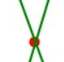
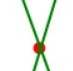
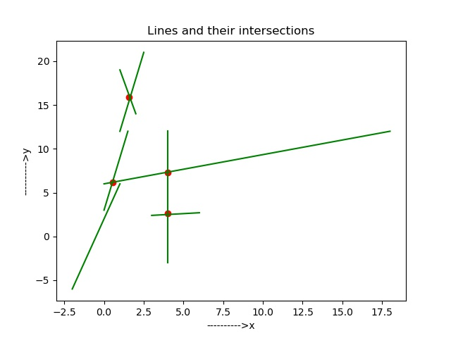

|  |
DAA Assignment
|


|
|  |
DAA Assignment
|
|
Partial Fulfillment of CS F364 Design and Analysis of Algorithms
Details regarding the algorithm, functions utilized and general workflow can be viewed via Doxygen documentation.
Implementation of Balanced Binary Search trees for Status and Event Queues.
or
Test cases used are present in the "test" directory.
Test results visualization on a cartesian plot:

Performance analysis was performed by plotting the number of segments vs time taken to run the program (T(n,k) plot). We later compare this with O((k+n)logn) plot.
Analysis showed that: